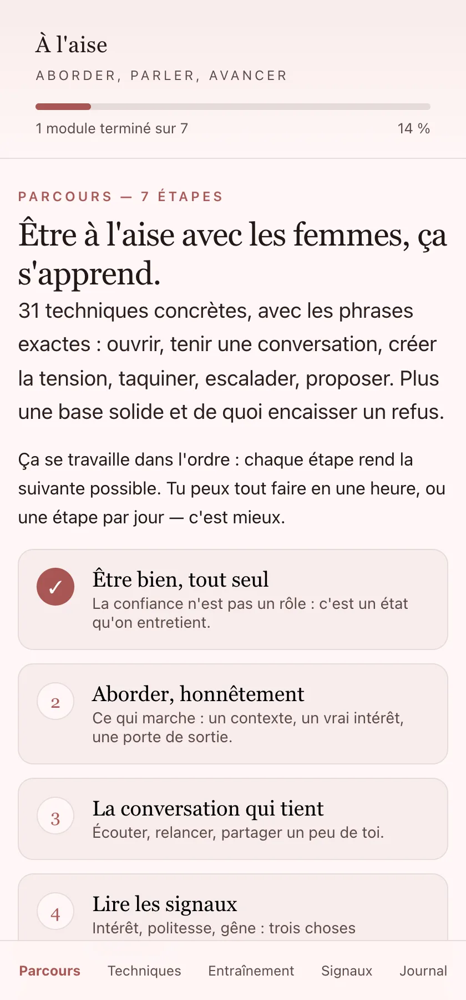
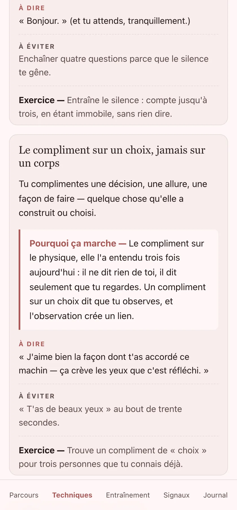
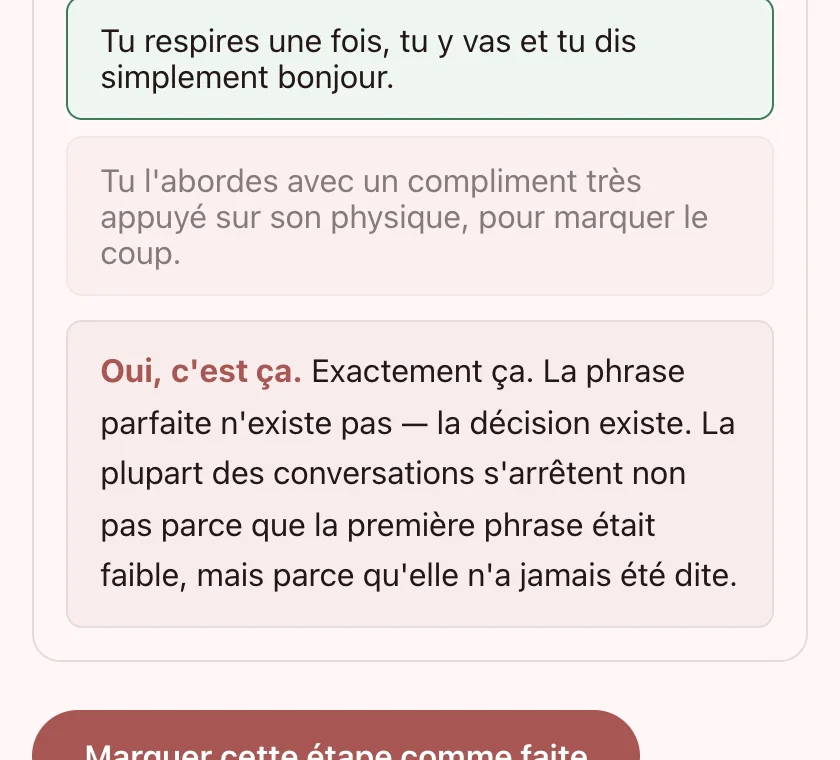

Ouvertures
L'honnête, la contextuelle, l'opinion, la courte, et le compliment sur un choix. Cinq façons d'entrer sans forcer.
5 techniques31 techniques, 7 étapes
Ce n'est pas un problème de phrases. C'est un problème de techniques, et ça s'apprend comme le reste : par exercices, jusqu'à ce que ça sorte tout seul.
Gratuit, et ça le restera. Pas de compte à rebours, pas de promo qui revient tous les soirs.


C'est le moment où tu te dis « tant pis ».
Le trajet du retour, tu le refais en entier dans ta tête. Avec les bonnes phrases.
Le lendemain, tu ne sais même plus son visage. Tu sais juste que tu n'as rien dit.
Ce n'est pas la timidité qui coûte cher. C'est la répétition.
La bascule
C'est de savoir ce que tu fais à chaque moment : la façon de tenir un silence, de relancer sur une émotion plutôt qu'un métier, de taquiner sans blesser, de proposer une date précise au lieu d'un « un de ces quatre ».
Ces gestes s'apprennent un par un, avec un exercice par technique. C'est exactement ce que contient l'appli.

Écris exactement ce que tu dirais. L'appli te dit ce qui va dessus, ce qui va coincer, et te donne une version corrigée.
Trente et une techniques, plus quatre pièges classiques et l'explication de ce qu'ils coûtent.
L'honnête, la contextuelle, l'opinion, la courte, et le compliment sur un choix. Cinq façons d'entrer sans forcer.
5 techniquesDébit lent, phrase qui descend, silence de deux secondes, immobilité, regard. Ce qui se lit avant tes mots.
5 techniquesTaquiner sans blesser, la reprise vingt minutes après, l'exagération, le jeu de rôle, la blague à vous deux.
5 techniquesLe regard qui reste une seconde de trop, le sourire qui arrive après, le compliment rare, le sous-entendu léger.
6 techniquesLe 50/50, la relance en escalier, l'histoire en trois temps, le partage risqué, le pivot vers un autre lieu.
5 techniquesLe changement de lieu par paliers, le contact naturel, la proposition datée, la sortie facile, le message unique.
5 techniquesLe faux désintérêt, les scripts de manipulateurs, le compliment physique en ouverture, le contexte fermé. Pourquoi ça fait perdre.
4 piègesChaque fiche se termine par un exercice. Une seule technique appliquée ce soir vaut mieux que les trente et une lues.
Ce qu'il y a dans l'appli
| Les autres | À l'aise | |
|---|---|---|
| Le format | Un PDF à lire | Un entraînement à faire |
| Le retour sur tes réponses | Aucun | Chaque scénario est corrigé |
| Le prix | « Promo jusqu'à minuit » | Gratuit, sans condition |
| Le paiement | Crypto, remboursement impossible | Aucun paiement demandé |
| Ce que ça t'apprend | À jouer un rôle | À tenir une conversation, même imparfaitement |
Aucun témoignage inventé, aucun compteur de ventes gonflé. Les seules choses qu'on peut te montrer, ce sont les écrans et la méthode.
GratuitPas d'essai, pas d'abonnement, pas de carte bancaire.
Ouvrir l'appliPourquoi c'est gratuit : je veux des retours sur ce qui marche vraiment, et un prix bloque les retours. Si un jour une version payante existe, elle sera annoncée, et ce qui est là aujourd'hui le restera.
Ce que l'appli ne fera jamais : t'apprendre à manipuler, à faire peur, ou à rendre quelqu'un dépendant de toi. Aucune technique ici ne repose sur l'insécurité de l'autre. C'est une limite assumée, pas une précaution.